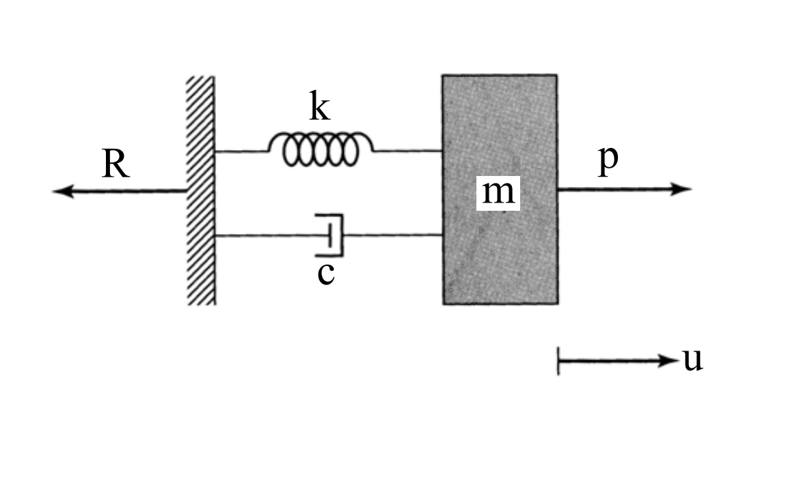

考題編號：SD-2007-3
主分類： SD-U1-3 單自由度系統之動態分析
副分類： SD-U1-2 運動方程式推導
分析方法： SDOF 強迫振動
標籤： SDOF 轉換函數 頻率響應函數 勁度設計 動力放大 諧和激振 振動控制
1. 原始題目重述 (Problem Restatement)
右圖為單自由度系統（彈簧 $k$、阻尼 $c$、質量 $m$ 並聯，固定於基座 $R$），受諧和激振力：
$$p(t) = p_0 \sin\Omega t$$
位移 $u$ 向右為正（相對於基座）。

圖說：基座 R 固定不動。彈簧 $k$ 與阻尼 $c$ 並聯，一端固定於基座，另端連接質量 $m$。外力 $p(t) = p_0\sin\Omega t$ 直接作用於質量。位移 $u$ 以向外為正。
子題（一）（5分）： 列出位移 $u$ 與 $p_0$ 之轉換函數
子題（二）（5分）： 列出加速度 $\ddot{u}$ 與 $p_0$ 之轉換函數
子題（三）（5分）： $p_0 = 0.1W$，限制 $\ddot{u}_{max} \leq 0.05g$，不考慮阻尼，設計 $k$
子題（四）（10分）： $p_0 = 10$ kN，$m = 1000$ kg，$\Omega = 2\pi$ rad/s，限制 $u_{max} \leq 10$ cm，不考慮阻尼，設計 $k$
2. 考題核心精神與出題者意圖 (Core Concepts & Examiner's Intent)
核心精神： 從頻率域（轉換函數）到時域（最大振幅），再到工程設計（求 $k$），是 SDOF 強迫振動的完整應用題。子題(三)(四)要求考生從振幅限制條件反求剛度，考驗設計導向的結構動力思維。
出題者意圖：
- 測試考生能否從頻率域推導位移與加速度之轉換函數
- 測試能否將振幅限制條件轉化為勁度設計不等式
- 測試共振避開設計（$k > m\Omega^2$）的工程判斷
陷阱：
- 子題(三)(四)均有兩個可能解（$k > m\Omega^2$ 與 $k < m\Omega^2$），但負分支往往不可行（物理上無法保持正 $k$）
- 子題(三)答案需以 $\Omega$ 表示（題目未給具體頻率值）
3. 解題戰略地圖與陷阱分析 (Strategic Roadmap & Trap Analysis)
作戰計畫：
- 建立運動方程式 → 假設穩態諧和解 → 求複數振幅 → 定義轉換函數
- 加速度轉換函數 = $(-\Omega^2)$ × 位移轉換函數
- 子題(三)：代入 $p_0 = 0.1W$，用加速度振幅公式設限，解 $k$
- 子題(四)：代入數值，用位移振幅公式設限，解 $k$
關鍵陷阱：
| # | 陷阱 | 應對策略 |
|---|---|---|
| 1 | 轉換函數是複數（含相位） | 題目問「轉換函數」，可寫複數形或取模；含阻尼版寫複數形即可 |
| 2 | $k - m\Omega^2$ 可正可負 | 必須分兩種情況討論，並驗證解的可行性 |
| 3 | 子題(三)無給 $\Omega$ | 答案合理地以 $\Omega$ 呈現，並說明需 $k > m\Omega^2$ 的設計條件 |
| 4 | 子題(四)確認是否在共振以下 | 驗算 $\omega_0 = \sqrt{k/m} > \Omega$，確保設計區域正確 |
3.5 變數層次分析 (Variable Hierarchy Analysis)
複習提示：第一次解題後，在每個卡住的知識點旁標記
⚠；第二次複習時只看有⚠的項目。
最終目標
建立位移與加速度之轉換函數，並依振幅限制條件設計勁度 $k$。
本題關鍵公式（依計算順序）
$$\text{Step 1：} m\ddot{u} + c\dot{u} + ku = p_0\sin\Omega t \quad \text{（運動方程式）}$$
$$\text{Step 2：} H_u(i\Omega) = \frac{U}{p_0} = \frac{1}{k - m\Omega^2 + ic\Omega} \quad \text{（位移轉換函數）}$$
$$\text{Step 3：} H_{\ddot{u}}(i\Omega) = \frac{\ddot{U}}{p_0} = \frac{-\Omega^2}{k - m\Omega^2 + ic\Omega} \quad \text{（加速度轉換函數）}$$
$$\text{Step 4（無阻尼）：} |u|_{max} = \frac{p_0}{|k - m\Omega^2|}, \quad |\ddot{u}|_{max} = \frac{p_0\,\Omega^2}{|k - m\Omega^2|}$$
$$\text{Step 5（子題三，} c=0\text{）：} \frac{0.1W \cdot \Omega^2}{k - m\Omega^2} \leq 0.05g \Rightarrow \boxed{k \geq 3m\Omega^2}$$
$$\text{Step 6（子題四，} c=0\text{）：} \frac{p_0}{k - m\Omega^2} \leq 0.1 \Rightarrow \boxed{k \geq \frac{p_0}{u_{max}} + m\Omega^2}$$
L1：題目直接給定
| 符號 | 數值 | 說明 |
|---|---|---|
| $p_0$ | 0.1$W$（子題三）；10 kN（子題四） | 激振力振幅 |
| $m$ | — / 1000 kg | 質量 |
| $\Omega$ | — / $2\pi$ rad/s | 激振圓頻率 |
| $u_{max}$ 限制 | — / 10 cm | 最大位移限制 |
| $\ddot{u}_{max}$ 限制 | 0.05$g$ | 最大加速度限制 |
L2：需知識點推導
① 轉換函數
| 符號 | 公式／來源 | 卡關? |
|---|---|---|
| $H_u$ | $1/(k - m\Omega^2 + ic\Omega)$ | |
| $H_{\ddot{u}}$ | $-\Omega^2 \cdot H_u$（加速度 = $-\Omega^2$ × 位移） | |
| $\|H_u\|$（無阻尼） | $1/\|k - m\Omega^2\|$ | |
| $\|\ddot{u}\|_{max}$ | $p_0\Omega^2/\|k-m\Omega^2\|$ |
② 勁度設計
| 符號 | 公式／來源 | 卡關? |
|---|---|---|
| $m\Omega^2$（子題四） | $1000 \times (2\pi)^2 = 4000\pi^2 \approx 39478$ N/m | |
| $k \geq 3m\Omega^2$（子題三） | 由加速度限制 + $W = mg$ 推導 | |
| $k \geq p_0/u_{max} + m\Omega^2$（子題四） | 由位移限制推導 |
L3：深層知識（不懂就卡住）
| 知識點 | 說明 | 卡關? |
|---|---|---|
| 頻率響應函數（FRF）定義 | 複數比值，分母 $= k - m\Omega^2 + ic\Omega$（阻抗） | |
| 加速度 FRF 與位移 FRF 的關係 | 時域中 $\ddot{u} = -\Omega^2 u$（穩態諧和），故 FRF 乘 $-\Omega^2$ | |
| 設計於共振以下（stiffness-controlled） | $k > m\Omega^2$，分母正值，唯一合理設計區 | |
| 共振以上（mass-controlled）不考慮 | $k < m\Omega^2$ 時正 $k$ 受限，且動態放大更難控制 |
4. 步驟化詳細計算過程 (Step-by-Step Detailed Calculation)
子題（一）：位移 $u$ 與 $p_0$ 之轉換函數
運動方程式：
$$m\ddot{u} + c\dot{u} + ku = p_0\sin\Omega t$$
假設穩態複數解： 令 $p(t) = p_0 e^{i\Omega t}$，對應穩態響應 $u(t) = U e^{i\Omega t}$，代入：
$$(-m\Omega^2 + ic\Omega + k)\,U\,e^{i\Omega t} = p_0\,e^{i\Omega t}$$
位移轉換函數（頻率響應函數）：
$$\boxed{H_u(i\Omega) = \frac{U}{p_0} = \frac{1}{k - m\Omega^2 + ic\Omega}}$$
取模（振幅比）：
$$|H_u| = \frac{1}{\sqrt{(k - m\Omega^2)^2 + (c\Omega)^2}}$$
子題（二）：加速度 $\ddot{u}$ 與 $p_0$ 之轉換函數
穩態下 $u(t) = U e^{i\Omega t}$，故：
$$\ddot{u}(t) = -\Omega^2 U e^{i\Omega t} = -\Omega^2 \cdot u(t)$$
加速度轉換函數：
$$\boxed{H_{\ddot{u}}(i\Omega) = \frac{\ddot{U}}{p_0} = -\Omega^2 \cdot H_u = \frac{-\Omega^2}{k - m\Omega^2 + ic\Omega}}$$
取模（加速度振幅比）：
$$|H_{\ddot{u}}| = \frac{\Omega^2}{\sqrt{(k - m\Omega^2)^2 + (c\Omega)^2}}$$
子題（三）：設計 $k$（$p_0 = 0.1W$，$\ddot{u}_{max} \leq 0.05g$，無阻尼）
無阻尼（$c = 0$）加速度振幅：
$$|\ddot{u}|_{max} = \frac{p_0\,\Omega^2}{|k - m\Omega^2|}$$
代入條件 $p_0 = 0.1W = 0.1mg$，令 $k > m\Omega^2$（共振以下，正分母）：
$$\frac{0.1mg\,\Omega^2}{k - m\Omega^2} \leq 0.05g$$
$$0.1m\Omega^2 \leq 0.05(k - m\Omega^2)$$
$$2m\Omega^2 \leq k - m\Omega^2$$
$$\boxed{k \geq 3m\Omega^2 = \frac{3W\Omega^2}{g}}$$
驗證： 此設計保持 $k > m\Omega^2$（因 $3m\Omega^2 > m\Omega^2$），設計於共振以下，合理。
說明：若 $k < m\Omega^2$ 則分母為負值（共振以上），$|k - m\Omega^2| = m\Omega^2 - k$；此時同樣推得 $m\Omega^2 - k \geq 2m\Omega^2$，即 $k \leq -m\Omega^2 < 0$，不可行。故唯一合理設計為 $k \geq 3m\Omega^2$。
子題（四）：設計 $k$（$p_0 = 10$ kN，$m = 1000$ kg，$\Omega = 2\pi$ rad/s，$u_{max} \leq 10$ cm，無阻尼）
計算 $m\Omega^2$：
$$m\Omega^2 = 1000 \times (2\pi)^2 = 4000\pi^2 \approx 39{,}478 \text{ N/m}$$
無阻尼位移振幅限制（令 $k > m\Omega^2$，共振以下）：
$$|u|_{max} = \frac{p_0}{k - m\Omega^2} \leq 0.10 \text{ m}$$
$$k - m\Omega^2 \geq \frac{p_0}{0.10} = \frac{10{,}000}{0.10} = 100{,}000 \text{ N/m}$$
$$k \geq 100{,}000 + 39{,}478 = 139{,}478 \text{ N/m}$$
$$\boxed{k \geq 139.5 \text{ kN/m} \approx 140 \text{ kN/m}}$$
驗算共振以下條件：
$$\omega_0 = \sqrt{\frac{k}{m}} \geq \sqrt{\frac{139{,}478}{1000}} \approx 11.8 \text{ rad/s} > \Omega = 2\pi \approx 6.28 \text{ rad/s} \quad \checkmark$$
驗算位移限制：
取 $k = 139{,}478$ N/m：
$$|u|_{max} = \frac{10{,}000}{139{,}478 - 39{,}478} = \frac{10{,}000}{100{,}000} = 0.10 \text{ m} = 10 \text{ cm} \quad \checkmark$$
共振以上分支（$k < m\Omega^2$）：需 $m\Omega^2 - k \geq 100{,}000$，即 $k \leq 39{,}478 - 100{,}000 = -60{,}522$ N/m，為負值，不可行。
5. 關鍵爭議點與進階探討 (Critical Issues & Advanced Discussion)
1. 子題(三)Ω 未給定的設計含義
子題(三)未給出具體激振頻率 $\Omega$，答案 $k \geq 3m\Omega^2$ 反映了一個參數化設計準則：在確定激振頻率後，選擇足夠大的勁度確保系統處於「剛度主導」（stiffness-controlled）區域，使加速度響應得到有效控制。這是結構振動設計中「避免共振、增大勁度」策略的典型體現。
2. 兩題設計策略的比較
| 子題(三) | 子題(四) | |
|---|---|---|
| 限制量 | 加速度 $\ddot{u}$ | 位移 $u$ |
| 設計變數 | $k$（以 $\Omega$ 參數化） | $k$（數值解） |
| 設計策略 | 增大 $k$（剛度主導） | 增大 $k$（剛度主導） |
| 最小 $k$ | $3m\Omega^2$ | $100{,}000 + 4000\pi^2 \approx 139.5$ kN/m |
3. 有阻尼時的設計效果
加入阻尼後，在共振附近可有效降低峰值振幅，設計限制可放寬。無阻尼設計過於保守，但對於考試題目和初步設計是合適的假設。
4. 考場寫法建議
轉換函數可寫成複數形或模的形式，通常模的形式更直觀。子題(三)須說明「共振以上分支不可行」，否則容易被扣分。子題(四)建議最後驗算 $\omega_0 > \Omega$ 確認設計合理性。